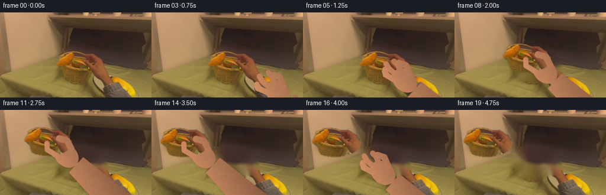
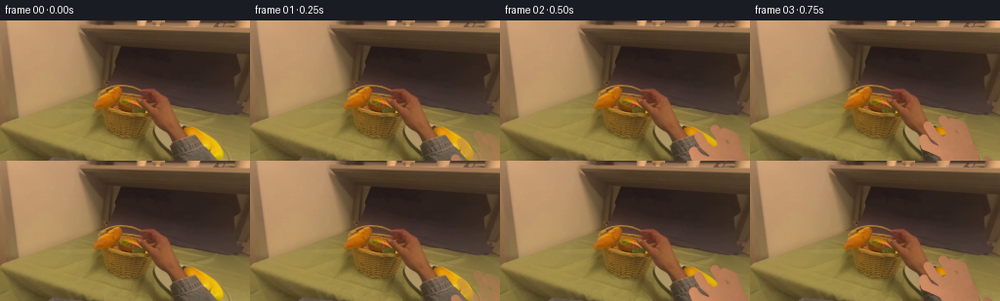
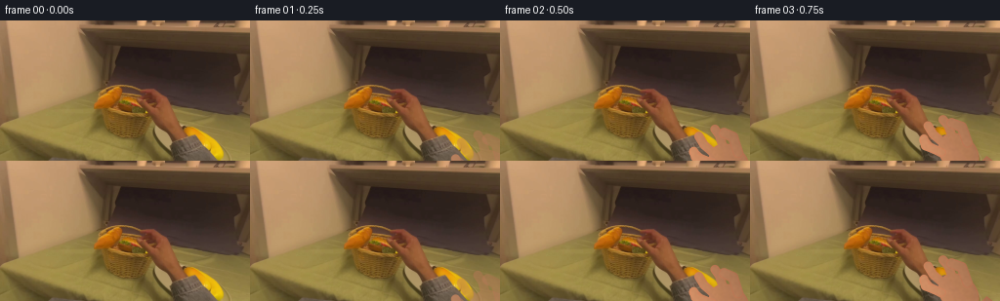

CODING AGENTS AS PIXEL WORLD MODELS
traex/GPT-5.6-Sol · common50_0019
点击播放 · 原生 RGB 像素
逐轮保存的候选
回放视频、检查图与代码变化。
每份候选均可单独播放。实际图片检查记录在下方工具轨迹中。
候选 01播放与检查图
点击播放 · 原生 RGB 像素


展开代码变化
--- 上一保存版本
+++ 本次保存版本
@@ -0,0 +1,245 @@
+from pathlib import Path
+import math
+import cv2
+import numpy as np
+from PIL import Image
+import artifact_io
+
+CASE_DIR = Path(__file__).resolve().parent
+W, H, N = 256, 144, 20
+S = 4 # supersampling for clean hand silhouettes
+
+
+def smoothstep(x):
+ x = float(np.clip(x, 0.0, 1.0))
+ return x * x * (3.0 - 2.0 * x)
+
+
+def extract_burger(rgb):
+ """Segment the warm burger in the center, using only source-frame pixels."""
+ mask = np.full((H, W), cv2.GC_BGD, np.uint8)
+ cv2.ellipse(mask, (135, 89), (44, 25), 0, 0, 360, cv2.GC_PR_FGD, -1)
+ r, g, b = [rgb[:, :, i] for i in range(3)]
+ warm = (r > 92) & ((r.astype(np.int16) - g) > 25) & ((r.astype(np.int16) - b) > 42)
+ mask[warm & (mask == cv2.GC_PR_FGD)] = cv2.GC_FGD
+ bg_model = np.zeros((1, 65), np.float64)
+ fg_model = np.zeros((1, 65), np.float64)
+ cv2.grabCut(rgb, mask, None, bg_model, fg_model, 8, cv2.GC_INIT_WITH_MASK)
+ raw = ((mask == cv2.GC_FGD) | (mask == cv2.GC_PR_FGD)).astype(np.uint8)
+ count, labels, stats, cents = cv2.connectedComponentsWithStats(raw, 8)
+ candidate = [i for i in range(1, count) if 90 < cents[i][0] < 180 and 60 < cents[i][1] < 120]
+ best = max(candidate, key=lambda i: stats[i, cv2.CC_STAT_AREA])
+ hard = (labels == best).astype(np.uint8) * 255
+ hard = cv2.morphologyEx(hard, cv2.MORPH_CLOSE, np.ones((5, 5), np.uint8))
+ hard = cv2.morphologyEx(hard, cv2.MORPH_OPEN, np.ones((3, 3), np.uint8))
+ alpha = cv2.GaussianBlur(hard, (5, 5), 0.75).astype(np.float32) / 255.0
+ x, y, w, h = cv2.boundingRect((hard > 0).astype(np.uint8))
+ pad = 4
+ x0, y0 = max(0, x-pad), max(0, y-pad)
+ x1, y1 = min(W, x+w+pad), min(H, y+h+pad)
+ return rgb[y0:y1, x0:x1].copy(), alpha[y0:y1, x0:x1].copy(), (x0, y0, x1, y1), alpha
+
+
+def reconstructed_background(rgb, alpha_full):
+ # Reconstruct the dark wicker/interior hidden by the burger. A broad,
+ # feathered inpaint avoids leaving a duplicate or a sharp cutout.
+ hole = (alpha_full > 0.045).astype(np.uint8) * 255
+ hole = cv2.dilate(hole, cv2.getStructuringElement(cv2.MORPH_ELLIPSE, (9, 7)))
+ base = cv2.inpaint(cv2.cvtColor(rgb, cv2.COLOR_RGB2BGR), hole, 7, cv2.INPAINT_TELEA)
+ base = cv2.cvtColor(base, cv2.COLOR_BGR2RGB)
+ # Keep reconstruction local and softly merge it into untouched source pixels.
+ feather = cv2.GaussianBlur(hole, (15, 15), 3.2).astype(np.float32)[:, :, None] / 255.0
+ return np.clip(rgb * (1-feather) + base * feather, 0, 255).astype(np.uint8)
+
+
+def alpha_blend(dst, color, alpha):
+ a = np.clip(alpha, 0, 1)[:, :, None]
+ return np.clip(dst.astype(np.float32) * (1-a) + color.astype(np.float32) * a, 0, 255).astype(np.uint8)
+
+
+def draw_shadow(frame, center, axes, opacity, blur=5):
+ m = np.zeros((H, W), np.uint8)
+ cv2.ellipse(m, (int(round(center[0]+3)), int(round(center[1]+5))),
+ (max(1, int(axes[0])), max(1, int(axes[1]))), 0, 0, 360, 255, -1, cv2.LINE_AA)
+ m = cv2.GaussianBlur(m, (0, 0), blur).astype(np.float32) / 255.0 * opacity
+ dark = np.zeros_like(frame) + np.array([30, 20, 15], np.uint8)
+ return alpha_blend(frame, dark, m)
+
+
+def paste_sprite(frame, sprite, alpha, center, angle=0.0, scale=1.0):
+ sh, sw = alpha.shape
+ M = cv2.getRotationMatrix2D((sw/2, sh/2), angle, scale)
+ # Add translation into full frame in one affine operation.
+ M[0, 2] += center[0] - sw/2
+ M[1, 2] += center[1] - sh/2
+ wrgb = cv2.warpAffine(sprite, M, (W, H), flags=cv2.INTER_CUBIC,
+ borderMode=cv2.BORDER_REPLICATE)
+ wa = cv2.warpAffine(alpha, M, (W, H), flags=cv2.INTER_CUBIC,
+ borderMode=cv2.BORDER_CONSTANT, borderValue=0)
+ return alpha_blend(frame, wrgb, wa)
+
+
+def highres_mask(draw_fn):
+ canvas = np.zeros((H*S, W*S), np.uint8)
+ draw_fn(canvas)
+ return cv2.resize(canvas, (W, H), interpolation=cv2.INTER_AREA).astype(np.float32) / 255.0
+
+
+def poly(mask, pts, val=255):
+ cv2.fillPoly(mask, [np.round(np.asarray(pts)*S).astype(np.int32)], val, cv2.LINE_AA)
+
+
+def ellipse(mask, center, axes, angle=0, val=255):
+ cv2.ellipse(mask, tuple(np.round(np.asarray(center)*S).astype(int)),
+ tuple(np.round(np.asarray(axes)*S).astype(int)), angle, 0, 360, val, -1, cv2.LINE_AA)
+
+
+def thick_curve(mask, points, width, val=255):
+ p = np.round(np.asarray(points)*S).astype(np.int32)
+ cv2.polylines(mask, [p], False, val, max(1, int(width*S)), cv2.LINE_AA)
+ rad = width*S/2
+ for q in (p[0], p[-1]):
+ cv2.circle(mask, tuple(q), max(1, int(rad)), val, -1, cv2.LINE_AA)
+
+
+def hand_masks(palm, openness, fade, phase):
+ """Warm, foreshortened first-person right hand, reaching toward upper-left."""
+ px, py = palm
+ u = np.array([-0.73, -0.684]) # wrist -> fingertips
+ v = np.array([-u[1], u[0]]) # hand-width direction
+ p = np.array([px, py], np.float32)
+
+ # Wrist runs back toward the lower-right edge.
+ wrist = p - u*23
+ far = wrist - u*112
+ w0, w1 = 17.5, 27.0
+ arm_pts = [wrist+v*w0, wrist-v*w0, far-v*w1, far+v*w1]
+
+ def behind_draw(m):
+ poly(m, arm_pts)
+ ellipse(m, p, (23, 18), 43)
+ # Fingers behind the food, spread while reaching and closing on grasp.
+ spread = 7.5 * openness
+ starts = [p + u*10 + v*(-11), p+u*14+v*(-3), p+u*13+v*6]
+ lengths = [35, 42, 35]
+ lateral = [-10-spread, -1, 9+spread]
+ for st, ln, lat in zip(starts, lengths, lateral):
+ end = p + u*ln + v*lat
+ bend = st*.35 + end*.65 + v*(2 if lat > 0 else -2)
+ thick_curve(m, [st, bend, end], 9.2)
+ behind = highres_mask(behind_draw) * fade
+
+ # Contact fingers lie in front of the burger rim during grasp/carry.
+ def front_draw(m):
+ # Curled thumb sweeps across the lower near edge.
+ thumb_root = p + v*14 + u*1
+ thumb_mid = p + u*16 + v*(19 + 4*openness)
+ thumb_tip = p + u*(29 - 4*openness) + v*(12 + 8*openness)
+ thick_curve(m, [thumb_root, thumb_mid, thumb_tip], 10.5)
+ # Index fingertip closes over far upper-right edge; opened on approach/release.
+ idx_root = p + u*13 - v*11
+ idx_mid = p + u*30 - v*(14 + 6*openness)
+ idx_tip = p + u*(38 - 3*openness) - v*(6 + 11*openness)
+ thick_curve(m, [idx_root, idx_mid, idx_tip], 8.5)
+ front = highres_mask(front_draw) * fade
+ return behind, front, (u, v, p)
+
+
+def skin_layer(frame, mask, basis, seed_shift=0, nails=False):
+ if mask.max() <= 0:
+ return frame
+ u, v, p = basis
+ yy, xx = np.mgrid[0:H, 0:W]
+ # Directional warm light from upper left; subtle pores retain source realism.
+ lateral = ((xx-p[0])*v[0] + (yy-p[1])*v[1])
+ longitudinal = ((xx-p[0])*u[0] + (yy-p[1])*u[1])
+ rng = np.random.default_rng(720 + seed_shift)
+ noise = cv2.GaussianBlur(rng.normal(0, 1, (H, W)).astype(np.float32), (0, 0), 1.0)
+ light = 1.0 - 0.0042*lateral + 0.0012*longitudinal + noise*0.025
+ base = np.zeros((H, W, 3), np.float32)
+ skin = np.array([185., 126., 89.], np.float32)
+ base[:] = skin
+ base *= light[:, :, None]
+ # Warm reddish shading at hand edges.
+ edge = np.clip(mask - cv2.erode(mask, np.ones((3,3),np.uint8)), 0, 1)
+ base[:, :, 0] += edge*7
+ base[:, :, 1] -= edge*5
+ base[:, :, 2] -= edge*4
+ out = alpha_blend(frame, np.clip(base, 0, 255).astype(np.uint8), mask*0.98)
+ return out
+
+
+def add_hand(frame, palm, openness, fade, phase, burger_front=False):
+ behind, front, basis = hand_masks(palm, openness, fade, phase)
+ # Hand casts its own soft grounded shadow.
+ sm = cv2.GaussianBlur(behind, (0,0), 3.0) * 0.18
+ frame = alpha_blend(frame, np.full_like(frame, [42,27,20]), sm)
+ frame = skin_layer(frame, behind, basis, int(phase*17))
+ return frame, front, basis
+
+
+def front_fingers(frame, front, basis, phase):
+ out = skin_layer(frame, front, basis, 100+int(phase*17))
+ # Small warm highlight along contact fingers, suggesting curved skin.
+ hi = cv2.GaussianBlur(front, (0,0), 1.0) * 0.08
+ return alpha_blend(out, np.full_like(out, [225,164,122]), hi)
+
+
+def main():
+ source = np.asarray(Image.open(CASE_DIR/'first_frame.png').convert('RGB'), dtype=np.uint8)
+ sprite, sprite_a, bbox, alpha_full = extract_burger(source)
+ clean = reconstructed_background(source, alpha_full)
+ c0 = np.array([135.0, 89.0])
+ c1 = np.array([57.0, 55.0]) # center of the warm-white plate on the left
+ frames = [source.copy()]
+
+ for i in range(1, N):
+ if i <= 6:
+ # Reach: original frame remains intact under the entering hand.
+ q = smoothstep((i-0.6)/5.4)
+ center = c0.copy()
+ palm = (np.array([249.0, 154.0])*(1-q) + np.array([164.0, 111.0])*q)
+ openness = 1.0 - 0.78*q
+ fade = smoothstep(i/2.0)
+ frame = source.copy()
+ frame, front, basis = add_hand(frame, palm, openness, fade, i/19)
+ frame = front_fingers(frame, front, basis, i/19)
+ elif i <= 14:
+ # Lift and carry on a shallow arc, exposing the basket beneath.
+ q = smoothstep((i-6)/8.0)
+ center = c0*(1-q) + c1*q
+ center[1] -= 14.0*math.sin(math.pi*q)
+ lift = math.sin(math.pi*q)
+ palm = center + np.array([30.0, 23.0])
+ openness = 0.12
+ scale = 1.0 - 0.035*lift
+ angle = -3.0*math.sin(math.pi*q) + 2.0*q
+ frame = clean.copy()
+ frame = draw_shadow(frame, center, (37*scale, 16*scale), 0.26-0.10*lift, 4+3*lift)
+ frame, front, basis = add_hand(frame, palm, openness, 1.0, i/19)
+ frame = paste_sprite(frame, sprite, sprite_a, center, angle, scale)
+ frame = front_fingers(frame, front, basis, i/19)
+ else:
+ # Set down, relax fingers, and withdraw toward the lower-right.
+ q = smoothstep((i-14)/5.0)
+ center = c1.copy()
+ palm0 = center + np.array([30.0, 23.0])
+ palm = palm0*(1-q) + np.array([223.0, 158.0])*q
+ openness = 0.12 + 0.88*q
+ fade = 1.0 - smoothstep(max(0.0, (q-0.50)/0.50))
+ frame = clean.copy()
+ frame = draw_shadow(frame, center, (38, 16), 0.28, 4)
+ frame, front, basis = add_hand(frame, palm, openness, fade, i/19)
+ frame = paste_sprite(frame, sprite, sprite_a, center, 2.0*(1-q), 1.0)
+ frame = front_fingers(frame, front, basis, i/19)
+
+ frames.append(frame.astype(np.uint8))
+
+ frames = np.stack(frames, axis=0).astype(np.uint8)
+ assert frames.shape == (20, 144, 256, 3)
+ assert np.array_equal(frames[0], source)
+ artifact_io.save(frames, CASE_DIR)
+
+
+if __name__ == '__main__':
+ main()
候选 02播放与检查图
点击播放 · 原生 RGB 像素

展开代码变化
--- 上一保存版本
+++ 本次保存版本
@@ -54,7 +54,9 @@
def alpha_blend(dst, color, alpha):
a = np.clip(alpha, 0, 1)[:, :, None]
- return np.clip(dst.astype(np.float32) * (1-a) + color.astype(np.float32) * a, 0, 255).astype(np.uint8)
+ # Round rather than truncate so zero-alpha pixels remain bit-identical.
+ mixed = dst.astype(np.float32) * (1-a) + color.astype(np.float32) * a
+ return np.clip(np.rint(mixed), 0, 255).astype(np.uint8)
def draw_shadow(frame, center, axes, opacity, blur=5):
可观测工具轨迹
实际执行的命令与返回图片。
命令 1exit 0
/bin/bash -lc "cat prompt.txt && printf '\\n--- GENERATION_RULES ---\\n' && cat GENERATION_RULES.md"
命令 2exit 0
/bin/bash -lc "find . -maxdepth 2 -type f -printf '%p\\n' | sort && printf '\\n--- tool versions ---\\n' && python3 --version && ffmpeg -version | head -n 3"
命令 3exit 0
/bin/bash -lc "python3 - <<'PY'
from PIL import Image
im=Image.open('first_frame.png')
print(im.mode, im.size)
print('extrema', im.getextrema())
PY"命令 4exit 0
/bin/bash -lc "cat task_spec.json && printf '\\n--- artifact_io ---\\n' && sed -n '1,240p' artifact_io.py"
命令 5exit 0
/bin/bash -lc "python3 - <<'PY'
from PIL import Image
import numpy as np
im=np.array(Image.open('first_frame.png'))
# Grid summaries over 8x8 blocks, map hue/luma to tokens
h,w=im.shape[:2]
chars=[]
for y in range(0,h,6):
row=[]
for x in range(0,w,6):
p=im[y:min(y+6,h),x:min(x+6,w)].mean((0,1)); r,g,b=p
mx=max(p); mn=min(p); lum=p.mean()
if lum<35: c='K'
elif mx-mn<12 and lum>180:c='W'
elif mx-mn<15:c='.'
elif r>g*1.35 and r>b*1.8:c='R'
elif r>g*1.15 and g>b*1.3:c='O'
elif g>r*1.15 and g>b*1.2:c='G'
elif b>r*1.2 and b>g*1.15:c='B'
elif r>g and g>=b:c='y'
else:c='m'
row.append(c)
print(''.join(row))
PY"命令 6exit 0
/bin/bash -lc "python3 - <<'PY'
from PIL import Image
import numpy as np
im=np.array(Image.open('first_frame.png'))
# quantized dominant colors
from collections import Counter
q=(im//16)*16
for c,n in Counter(map(tuple,q.reshape(-1,3))).most_common(30):print(n,c)
PY"命令 7exit 0
/bin/bash -lc "python3 - <<'PY'
try:
import cv2; print('cv2',cv2.__version__)
except Exception as e: print('no cv2',e)
try:
import scipy; print('scipy',scipy.__version__)
except Exception as e: print('no scipy',e)
PY"命令 8exit 0
/bin/bash -lc "python3 - <<'PY'
import numpy as np
from PIL import Image
im=np.array(Image.open('first_frame.png')).astype(float)
h,w,_=im.shape
# per 16x16 block mean RGB and std luminance
for y in range(0,h,12):
print('Y',y)
for x in range(0,w,16):
q=im[y:min(y+12,h),x:min(x+16,w)]
m=q.mean((0,1)).astype(int); lum=q.mean(2)
print(f'{x:3}:{m[0]:3},{m[1]:3},{m[2]:3}/{lum.std():2.0f}',end=' ')
print()
PY"命令 9exit 0
/bin/bash -lc "python3 - <<'PY'
import numpy as np
from PIL import Image
im=np.array(Image.open('first_frame.png')).astype(float)
# list extrema positions and region stats
lum=im.mean(2); mx=im.max(2); mn=im.min(2); sat=mx-mn
for name,a,rev in [('lum',lum,True),('dark',lum,False),('sat',sat,True),('redness',im[:,:,0]-im[:,:,1],True)]:
idx=np.argsort(a.ravel())[-30:] if rev else np.argsort(a.ravel())[:30]
print(name, [(int(i%256),int(i//256),round(float(a.ravel()[i]),1),tuple(im.reshape(-1,3)[i].astype(int))) for i in idx[::5]])
PY"命令 10exit 0
/bin/bash -lc "python3 - <<'PY'
import cv2, numpy as np
from PIL import Image
im=np.array(Image.open('first_frame.png'))
g=cv2.cvtColor(im,cv2.COLOR_RGB2GRAY)
# gradient edges > thresholds, clustered positions
for y in range(0,144,4):
a=np.abs(np.diff(g[y].astype(int)))
xs=np.where(a>12)[0]
# merge nearby
groups=[]
for x in xs:
if not groups or x-groups[-1][-1]>3:groups.append([x])
else:groups[-1].append(x)
print(f'{y:3}:',[(int(np.mean(z)),int(a[z].max())) for z in groups])
PY"命令 11exit 0
/bin/bash -lc "python3 - <<'PY'
from PIL import Image
import numpy as np
im=np.array(Image.open('first_frame.png'))
# map ROI into categories per 3x3 mean
# P=pale/skin/plate; D=dark bg; B=bright bun orange; r=reddish; W=wicker yellow; t=tan; k=very dark; .=other
for y in range(55,144,3):
s=''
for x in range(75,256,3):
r,g,b=im[y:y+3,x:x+3].mean((0,1)); lum=(r+g+b)/3
if lum<38:c='k'
elif lum<55:c='d'
elif r>165 and r-g>55 and b<50:c='B'
elif r>120 and r-g>50 and b<60:c='o'
elif r-g>55 and r>110:c='R'
elif r>g*1.4 and r>b*1.7:c='r'
elif r>185 and g>155 and b<50:c='Y'
elif r>150 and g>125 and b<90:c='W'
elif r>145 and g>115 and b<100:c='T'
elif r>115 and g>95 and b<75:c='t'
elif r>100 and g>75 and b<65:c='s'
elif lum<75:c='.'
else:c='-'
s+=c
print(f'{y:3} {s}')
PY"命令 12exit 0
/bin/bash -lc "python3 - <<'PY'
import cv2,numpy as np
from PIL import Image
from sklearn.cluster import KMeans
im=np.array(Image.open('first_frame.png'))
roi=im[55:125,80:200]
km=KMeans(n_clusters=10,random_state=1,n_init=10).fit(roi.reshape(-1,3))
lab=km.labels_.reshape(70,120); cen=km.cluster_centers_
order=np.argsort(cen.mean(1))
print([(i,np.round(cen[i]).astype(int).tolist(),int((lab==i).sum())) for i in order])
chars='abcdefghij'
# map own ordered labels
mp={v:chars[k] for k,v in enumerate(order)}
for y in range(0,70,2):
print(f'{y+55:3}', ''.join(mp[int(np.bincount(lab[y:y+2,x:x+2].flat,minlength=10).argmax())] for x in range(0,120,2)))
PY"命令 13exit 0
/bin/bash -lc "python3 - <<'PY'
import cv2,numpy as np
from PIL import Image
im=np.array(Image.open('first_frame.png'))
mask=np.full(im.shape[:2],cv2.GC_BGD,np.uint8)
cv2.ellipse(mask,(133,87),(43,25),0,0,360,cv2.GC_PR_FGD,-1)
# outside inner polygon remains probable FG but strong pixels definite
r,g,b=im.transpose(2,0,1)
strong=(r>95)&(r-g>28)&(r-b>45)
mask[strong & (mask==cv2.GC_PR_FGD)]=cv2.GC_FGD
bgd=np.zeros((1,65),np.float64); fgd=np.zeros((1,65),np.float64)
cv2.grabCut(im,mask,None,bgd,fgd,8,cv2.GC_INIT_WITH_MASK)
fg=(mask==1)|(mask==3)
num, lab, stats, cent=cv2.connectedComponentsWithStats(fg.astype(np.uint8),8)
print(sorted([(int(stats[i,4]),stats[i,:4].tolist(),cent[i].tolist()) for i in range(1,num)],reverse=True)[:20])
# rows extents largest comp near center
ix=max(range(1,num), key=lambda i: stats[i,4]); q=lab==ix
for y in range(55,120,2):
xs=np.where(q[y])[0]
if len(xs):print(y,xs.min(),xs.max(),len(xs))
PY"命令 14exit 0
/bin/bash -lc "cat > generate.py <<'PY'
from pathlib import Path
import math
import cv2
import numpy as np
from PIL import Image
import artifact_io
CASE_DIR = Path(__file__).resolve().parent
W, H, N = 256, 144, 20
S = 4 # supersampling for clean hand silhouettes
def smoothstep(x):
x = float(np.clip(x, 0.0, 1.0))
return x * x * (3.0 - 2.0 * x)
def extract_burger(rgb):
\"\"\"Segment the warm burger in the center, using only source-frame pixels.\"\"\"
mask = np.full((H, W), cv2.GC_BGD, np.uint8)
cv2.ellipse(mask, (135, 89), (44, 25), 0, 0, 360, cv2.GC_PR_FGD, -1)
r, g, b = [rgb[:, :, i] for i in range(3)]
warm = (r > 92) & ((r.astype(np.int16) - g) > 25) & ((r.astype(np.int16) - b) > 42)
mask[warm & (mask == cv2.GC_PR_FGD)] = cv2.GC_FGD
bg_model = np.zeros((1, 65), np.float64)
fg_model = np.zeros((1, 65), np.float64)
cv2.grabCut(rgb, mask, None, bg_model, fg_model, 8, cv2.GC_INIT_WITH_MASK)
raw = ((mask == cv2.GC_FGD) | (mask == cv2.GC_PR_FGD)).astype(np.uint8)
count, labels, stats, cents = cv2.connectedComponentsWithStats(raw, 8)
candidate = [i for i in range(1, count) if 90 < cents[i][0] < 180 and 60 < cents[i][1] < 120]
best = max(candidate, key=lambda i: stats[i, cv2.CC_STAT_AREA])
hard = (labels == best).astype(np.uint8) * 255
hard = cv2.morphologyEx(hard, cv2.MORPH_CLOSE, np.ones((5, 5), np.uint8))
hard = cv2.morphologyEx(hard, cv2.MORPH_OPEN, np.ones((3, 3), np.uint8))
alpha = cv2.GaussianBlur(hard, (5, 5), 0.75).astype(np.float32) / 255.0
x, y, w, h = cv2.boundingRect((hard > 0).astype(np.uint8))
pad = 4
x0, y0 = max(0, x-pad), max(0, y-pad)
x1, y1 = min(W, x+w+pad), min(H, y+h+pad)
return rgb[y0:y1, x0:x1].copy(), alpha[y0:y1, x0:x1].copy(), (x0, y0, x1, y1), alpha
def reconstructed_background(rgb, alpha_full):
# Reconstruct the dark wicker/interior hidden by the burger. A broad,
# feathered inpaint avoids leaving a duplicate or a sharp cutout.
hole = (alpha_full > 0.045).astype(np.uint8) * 255
hole = cv2.dilate(hole, cv2.getStructuringElement(cv2.MORPH_ELLIPSE, (9, 7)))
base = cv2.inpaint(cv2.cvtColor(rgb, cv2.COLOR_RGB2BGR), hole, 7, cv2.INPAINT_TELEA)
base = cv2.cvtColor(base, cv2.COLOR_BGR2RGB)
# Keep reconstruction local and softly merge it into untouched source pixels.
feather = cv2.GaussianBlur(hole, (15, 15), 3.2).astype(np.float32)[:, :, None] / 255.0
return np.clip(rgb * (1-feather) + base * feather, 0, 255).astype(np.uint8)
def alpha_blend(dst, color, alpha):
a = np.clip(alpha, 0, 1)[:, :, None]
return np.clip(dst.astype(np.float32) * (1-a) + color.astype(np.float32) * a, 0, 255).astype(np.uint8)
def draw_shadow(frame, center, axes, opacity, blur=5):
m = np.zeros((H, W), np.uint8)
cv2.ellipse(m, (int(round(center[0]+3)), int(round(center[1]+5))),
(max(1, int(axes[0])), max(1, int(axes[1]))), 0, 0, 360, 255, -1, cv2.LINE_AA)
m = cv2.GaussianBlur(m, (0, 0), blur).astype(np.float32) / 255.0 * opacity
dark = np.zeros_like(frame) + np.array([30, 20, 15], np.uint8)
return alpha_blend(frame, dark, m)
def paste_sprite(frame, sprite, alpha, center, angle=0.0, scale=1.0):
sh, sw = alpha.shape
M = cv2.getRotationMatrix2D((sw/2, sh/2), angle, scale)
# Add translation into full frame in one affine operation.
M[0, 2] += center[0] - sw/2
M[1, 2] += center[1] - sh/2
wrgb = cv2.warpAffine(sprite, M, (W, H), flags=cv2.INTER_CUBIC,
borderMode=cv2.BORDER_REPLICATE)
wa = cv2.warpAffine(alpha, M, (W, H), flags=cv2.INTER_CUBIC,
borderMode=cv2.BORDER_CONSTANT, borderValue=0)
return alpha_blend(frame, wrgb, wa)
def highres_mask(draw_fn):
canvas = np.zeros((H*S, W*S), np.uint8)
draw_fn(canvas)
return cv2.resize(canvas, (W, H), interpolation=cv2.INTER_AREA).astype(np.float32) / 255.0
def poly(mask, pts, val=255):
cv2.fillPoly(mask, [np.round(np.asarray(pts)*S).astype(np.int32)], val, cv2.LINE_AA)
def ellipse(mask, center, axes, angle=0, val=255):
cv2.ellipse(mask, tuple(np.round(np.asarray(center)*S).astype(int)),
tuple(np.round(np.asarray(axes)*S).astype(int)), angle, 0, 360, val, -1, cv2.LINE_AA)
def thick_curve(mask, points, width, val=255):
p = np.round(np.asarray(points)*S).astype(np.int32)
cv2.polylines(mask, [p], False, val, max(1, int(width*S)), cv2.LINE_AA)
rad = width*S/2
for q in (p[0], p[-1]):
cv2.circle(mask, tuple(q), max(1, int(rad)), val, -1, cv2.LINE_AA)
def hand_masks(palm, openness, fade, phase):
\"\"\"Warm, foreshortened first-person right hand, reaching toward upper-left.\"\"\"
px, py = palm
u = np.array([-0.73, -0.684]) # wrist -> fingertips
v = np.array([-u[1], u[0]]) # hand-width direction
p = np.array([px, py], np.float32)
# Wrist runs back toward the lower-right edge.
wrist = p - u*23
far = wrist - u*112
w0, w1 = 17.5, 27.0
arm_pts = [wrist+v*w0, wrist-v*w0, far-v*w1, far+v*w1]
def behind_draw(m):
poly(m, arm_pts)
ellipse(m, p, (23, 18), 43)
# Fingers behind the food, spread while reaching and closing on grasp.
spread = 7.5 * openness
starts = [p + u*10 + v*(-11), p+u*14+v*(-3), p+u*13+v*6]
lengths = [35, 42, 35]
lateral = [-10-spread, -1, 9+spread]
for st, ln, lat in zip(starts, lengths, lateral):
end = p + u*ln + v*lat
bend = st*.35 + end*.65 + v*(2 if lat > 0 else -2)
thick_curve(m, [st, bend, end], 9.2)
behind = highres_mask(behind_draw) * fade
# Contact fingers lie in front of the burger rim during grasp/carry.
def front_draw(m):
# Curled thumb sweeps across the lower near edge.
thumb_root = p + v*14 + u*1
thumb_mid = p + u*16 + v*(19 + 4*openness)
thumb_tip = p + u*(29 - 4*openness) + v*(12 + 8*openness)
thick_curve(m, [thumb_root, thumb_mid, thumb_tip], 10.5)
# Index fingertip closes over far upper-right edge; opened on approach/release.
idx_root = p + u*13 - v*11
idx_mid = p + u*30 - v*(14 + 6*openness)
idx_tip = p + u*(38 - 3*openness) - v*(6 + 11*openness)
thick_curve(m, [idx_root, idx_mid, idx_tip], 8.5)
front = highres_mask(front_draw) * fade
return behind, front, (u, v, p)
def skin_layer(frame, mask, basis, seed_shift=0, nails=False):
if mask.max() <= 0:
return frame
u, v, p = basis
yy, xx = np.mgrid[0:H, 0:W]
# Directional warm light from upper left; subtle pores retain source realism.
lateral = ((xx-p[0])*v[0] + (yy-p[1])*v[1])
longitudinal = ((xx-p[0])*u[0] + (yy-p[1])*u[1])
rng = np.random.default_rng(720 + seed_shift)
noise = cv2.GaussianBlur(rng.normal(0, 1, (H, W)).astype(np.float32), (0, 0), 1.0)
light = 1.0 - 0.0042*lateral + 0.0012*longitudinal + noise*0.025
base = np.zeros((H, W, 3), np.float32)
skin = np.array([185., 126., 89.], np.float32)
base[:] = skin
base *= light[:, :, None]
# Warm reddish shading at hand edges.
edge = np.clip(mask - cv2.erode(mask, np.ones((3,3),np.uint8)), 0, 1)
base[:, :, 0] += edge*7
base[:, :, 1] -= edge*5
base[:, :, 2] -= edge*4
out = alpha_blend(frame, np.clip(base, 0, 255).astype(np.uint8), mask*0.98)
return out
def add_hand(frame, palm, openness, fade, phase, burger_front=False):
behind, front, basis = hand_masks(palm, openness, fade, phase)
# Hand casts its own soft grounded shadow.
sm = cv2.GaussianBlur(behind, (0,0), 3.0) * 0.18
frame = alpha_blend(frame, np.full_like(frame, [42,27,20]), sm)
frame = skin_layer(frame, behind, basis, int(phase*17))
return frame, front, basis
def front_fingers(frame, front, basis, phase):
out = skin_layer(frame, front, basis, 100+int(phase*17))
# Small warm highlight along contact fingers, suggesting curved skin.
hi = cv2.GaussianBlur(front, (0,0), 1.0) * 0.08
return alpha_blend(out, np.full_like(out, [225,164,122]), hi)
def main():
source = np.asarray(Image.open(CASE_DIR/'first_frame.png').convert('RGB'), dtype=np.uint8)
sprite, sprite_a, bbox, alpha_full = extract_burger(source)
clean = reconstructed_background(source, alpha_full)
c0 = np.array([135.0, 89.0])
c1 = np.array([57.0, 55.0]) # center of the warm-white plate on the left
frames = [source.copy()]
for i in range(1, N):
if i <= 6:
# Reach: original frame remains intact under the entering hand.
q = smoothstep((i-0.6)/5.4)
center = c0.copy()
palm = (np.array([249.0, 154.0])*(1-q) + np.array([164.0, 111.0])*q)
openness = 1.0 - 0.78*q
fade = smoothstep(i/2.0)
frame = source.copy()
frame, front, basis = add_hand(frame, palm, openness, fade, i/19)
frame = front_fingers(frame, front, basis, i/19)
elif i <= 14:
# Lift and carry on a shallow arc, exposing the basket beneath.
q = smoothstep((i-6)/8.0)
center = c0*(1-q) + c1*q
center[1] -= 14.0*math.sin(math.pi*q)
lift = math.sin(math.pi*q)
palm = center + np.array([30.0, 23.0])
openness = 0.12
scale = 1.0 - 0.035*lift
angle = -3.0*math.sin(math.pi*q) + 2.0*q
frame = clean.copy()
frame = draw_shadow(frame, center, (37*scale, 16*scale), 0.26-0.10*lift, 4+3*lift)
frame, front, basis = add_hand(frame, palm, openness, 1.0, i/19)
frame = paste_sprite(frame, sprite, sprite_a, center, angle, scale)
frame = front_fingers(frame, front, basis, i/19)
else:
# Set down, relax fingers, and withdraw toward the lower-right.
q = smoothstep((i-14)/5.0)
center = c1.copy()
palm0 = center + np.array([30.0, 23.0])
palm = palm0*(1-q) + np.array([223.0, 158.0])*q
openness = 0.12 + 0.88*q
fade = 1.0 - smoothstep(max(0.0, (q-0.50)/0.50))
frame = clean.copy()
frame = draw_shadow(frame, center, (38, 16), 0.28, 4)
frame, front, basis = add_hand(frame, palm, openness, fade, i/19)
frame = paste_sprite(frame, sprite, sprite_a, center, 2.0*(1-q), 1.0)
frame = front_fingers(frame, front, basis, i/19)
frames.append(frame.astype(np.uint8))
frames = np.stack(frames, axis=0).astype(np.uint8)
assert frames.shape == (20, 144, 256, 3)
assert np.array_equal(frames[0], source)
artifact_io.save(frames, CASE_DIR)
if __name__ == '__main__':
main()
PY
python3 generate.py
python3 - <<'PY'
from PIL import Image
import numpy as np
f=np.array(Image.open('first_frame.png'))
a=np.array(Image.open('frames/00.png'))
print('frame0 exact:', np.array_equal(f,a))
z=np.load('pixels.npz')['pixels']
print('pixels',z.shape,z.dtype)
for i in [0,1,3,6,8,10,12,14,16,18,19]:
im=np.array(Image.open(f'frames/{i:02}.png'))
print(i, im.mean((0,1)).round(2), np.mean(np.any(im"'!=f,2)).round(3))
PY'命令 15exit 0
/bin/bash -lc "python3 - <<'PY'
from pathlib import Path
from PIL import Image
import numpy as np
files=sorted(Path('frames').glob('*.png'))
ims=np.stack([np.array(Image.open(p)) for p in files])
src=np.array(Image.open('first_frame.png'))
print('files',len(files),'shape',ims.shape,'dtype',ims.dtype,'exact0',np.array_equal(ims[0],src))
for i in range(1,20):
d=np.abs(ims[i].astype(np.int16)-ims[i-1].astype(np.int16))
changed=np.any(d>0,2)
ys,xs=np.where(changed)
print(f'{i:02d} changed={changed.mean():.3f} MAE={d.mean():.2f} bbox=({xs.min()},{ys.min()})-({xs.max()},{ys.max()})')
print('outputs',[(p.name,p.stat().st_size) for p in [Path('pixels.npz'),Path('index.html'),Path('inspection.png'),Path('transition_check.png')]])
PY"命令 16exit 0
/bin/bash -lc "python3 - <<'PY'
# Track the high-red/chroma burger material component in source vs final.
import cv2,numpy as np
from PIL import Image
for i in [0,6,8,10,12,14,16,19]:
a=np.array(Image.open(f'frames/{i:02}.png')).astype(np.int16)
r,g,b=a.transpose(2,0,1)
m=((r>115)&(r-g>45)&(r-b>70)).astype(np.uint8)
n,lab,st,cen=cv2.connectedComponentsWithStats(m,8)
blobs=sorted([(int(st[j,4]),tuple(np.round(cen[j],1))) for j in range(1,n) if st[j,4]>20],reverse=True)[:3]
print(i,blobs)
PY"命令 17exit 0
/bin/bash -lc 'python3 -m py_compile generate.py artifact_io.py && git status --short 2>/dev/null || true'
命令 18exit 0
/bin/bash -lc "python3 generate.py && python3 - <<'PY'
from pathlib import Path
from PIL import Image
import numpy as np
ims=np.stack([np.array(Image.open(f'frames/{i:02}.png')) for i in range(20)])
src=np.array(Image.open('first_frame.png'))
print('shape/dtype/exact:',ims.shape,ims.dtype,np.array_equal(ims[0],src))
for i in [1,6,7,10,14,15,19]:
d=np.abs(ims[i].astype(np.int16)-ims[i-1].astype(np.int16))
print(i,'change',round(np.any(d,2).mean(),3),'mae',round(d.mean(),2))
print('final source changed',round(np.any(ims[-1]"'!=src,2).mean(),3))
PY'保存候选 2 份；完成命令 18 次；可验证图片返回 0 张。原始 API 响应与完整日志保留在本地。